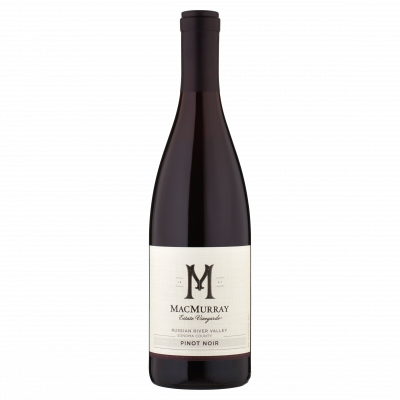

Vin
Hvad er vin?
Vin er en alkoholisk drik, som er fremstillet på gærede druer.
Vin kan opdeles i sorter, typer og distrikter.
Vintyper
- Rødvin:lavet på blå druer med skaller.
- Hvidvin:lavet på grønne druer eller afskallede blå druer.
- Rosévin:lavet på blå druer, hvor skallerne bliver sorteret fra tidligt i gæringsprocessen.
- Mousserende vin:laves på både grønne og blå druer. Champagne laves på pinot noir, meunier og chardonnay omkring Reims.
- Hedvin:vin med højere alkoholindhold end de andre typer.
- Isvin:vin med sød smag og lavt alkoholindhold.